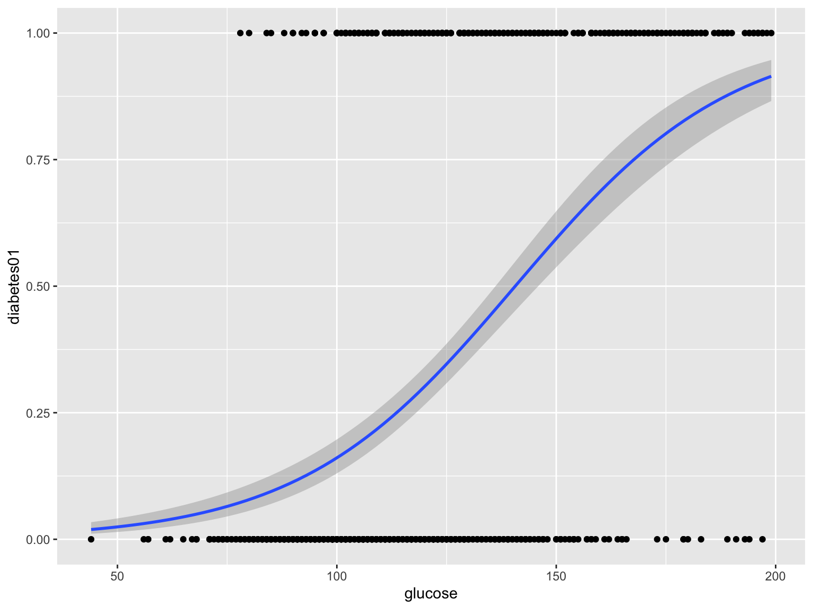
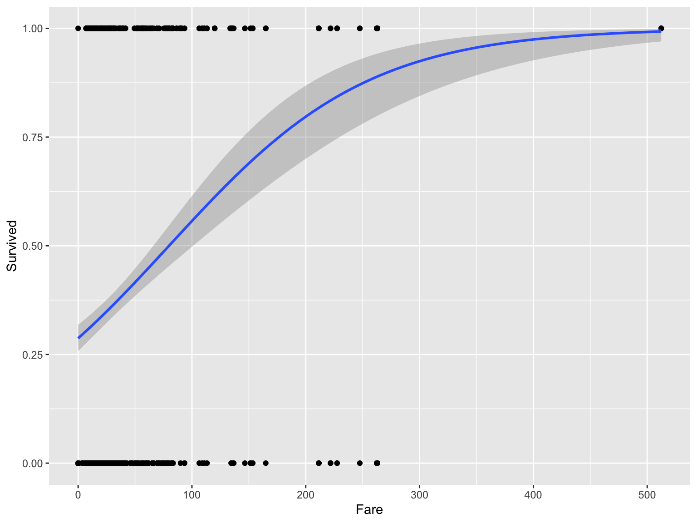

D. S. Fernández del Viso
Septiembre 2020
En este caso las variables independientes no son binarias (0,1) sino datos continuos.
# paquetes
library(tidyverse)
library(caret)
library(mlbench)
# cargar datos (estos son directamente del paquete mlbench, en su caso debe usar readxl o similar)
data("PimaIndiansDiabetes2", package = "mlbench")
# inspeccionar los datos
sample_n(PimaIndiansDiabetes2, 6)## pregnant glucose pressure triceps insulin mass pedigree age diabetes
## 638 2 94 76 18 66 31.6 0.649 23 neg
## 498 2 81 72 15 76 30.1 0.547 25 neg
## 52 1 101 50 15 36 24.2 0.526 26 neg
## 519 13 76 60 NA NA 32.8 0.180 41 neg
## 197 1 105 58 NA NA 24.3 0.187 21 neg
## 394 4 116 72 12 87 22.1 0.463 37 neglibrary(MASS)
# Fit the model
model <- glm(diabetes ~., data = PimaIndiansDiabetes2, family = binomial())
# Summarize the final selected model
summary(model)##
## Call:
## glm(formula = diabetes ~ ., family = binomial(), data = PimaIndiansDiabetes2)
##
## Deviance Residuals:
## Min 1Q Median 3Q Max
## -2.7823 -0.6603 -0.3642 0.6409 2.5612
##
## Coefficients:
## Estimate Std. Error z value Pr(>|z|)
## (Intercept) -1.004e+01 1.218e+00 -8.246 < 2e-16 ***
## pregnant 8.216e-02 5.543e-02 1.482 0.13825
## glucose 3.827e-02 5.768e-03 6.635 3.24e-11 ***
## pressure -1.420e-03 1.183e-02 -0.120 0.90446
## triceps 1.122e-02 1.708e-02 0.657 0.51128
## insulin -8.253e-04 1.306e-03 -0.632 0.52757
## mass 7.054e-02 2.734e-02 2.580 0.00989 **
## pedigree 1.141e+00 4.274e-01 2.669 0.00760 **
## age 3.395e-02 1.838e-02 1.847 0.06474 .
## ---
## Signif. codes: 0 '***' 0.001 '**' 0.01 '*' 0.05 '.' 0.1 ' ' 1
##
## (Dispersion parameter for binomial family taken to be 1)
##
## Null deviance: 498.10 on 391 degrees of freedom
## Residual deviance: 344.02 on 383 degrees of freedom
## (376 observations deleted due to missingness)
## AIC: 362.02
##
## Number of Fisher Scoring iterations: 5## OR 2.5 % 97.5 %
## (Intercept) 4.358754e-05 3.548295e-06 0.0004258459
## pregnant 1.085629e+00 9.743237e-01 1.2116311454
## glucose 1.039011e+00 1.027717e+00 1.0513035403
## pressure 9.985807e-01 9.757909e-01 1.0223068780
## triceps 1.011285e+00 9.778466e-01 1.0457799522
## insulin 9.991750e-01 9.966180e-01 1.0017675218
## mass 1.073085e+00 1.017827e+00 1.1335373213
## pedigree 3.129611e+00 1.378380e+00 7.3682727463
## age 1.034535e+00 9.985446e-01 1.0735228530library(ggplot2)
#pasar datos de diabetes "pos" y "neg" a 1s y 0s
diabetes01 <- ifelse(PimaIndiansDiabetes2$diabetes == "pos", 1, 0)
#gráfica con curva logística
ggplot(PimaIndiansDiabetes2, aes(x=glucose, y=diabetes01, na.rm = TRUE)) +
geom_point() +
geom_smooth(method = "glm",
method.args = list(family = "binomial"),
se = TRUE)
library(MASS)
# Fit the model
model_t <- glm(diabetes ~ ., data = train.data, family = binomial)
# Summarize the final selected model
summary(model_t)##
## Call:
## glm(formula = diabetes ~ ., family = binomial, data = train.data)
##
## Deviance Residuals:
## Min 1Q Median 3Q Max
## -2.8046 -0.6712 -0.3765 0.6316 2.6294
##
## Coefficients:
## Estimate Std. Error z value Pr(>|z|)
## (Intercept) -1.026e+01 1.392e+00 -7.370 1.71e-13 ***
## pregnant 3.562e-02 6.256e-02 0.569 0.56911
## glucose 3.969e-02 6.817e-03 5.822 5.80e-09 ***
## pressure -3.277e-03 1.306e-02 -0.251 0.80184
## triceps -1.009e-03 1.971e-02 -0.051 0.95916
## insulin -6.832e-04 1.445e-03 -0.473 0.63645
## mass 8.291e-02 3.171e-02 2.615 0.00893 **
## pedigree 1.619e+00 5.010e-01 3.231 0.00123 **
## age 3.520e-02 2.001e-02 1.759 0.07849 .
## ---
## Signif. codes: 0 '***' 0.001 '**' 0.01 '*' 0.05 '.' 0.1 ' ' 1
##
## (Dispersion parameter for binomial family taken to be 1)
##
## Null deviance: 399.60 on 314 degrees of freedom
## Residual deviance: 278.74 on 306 degrees of freedom
## (300 observations deleted due to missingness)
## AIC: 296.74
##
## Number of Fisher Scoring iterations: 5# Make predictions
probabilities <- model_t %>% predict(test.data, type = "response")
predicted.classes <- ifelse(probabilities > 0.5, "pos", "neg")
# Prediction accuracy
observed.classes <- test.data$diabetes
mean(predicted.classes == observed.classes, na.rm = TRUE)## [1] 0.8051948## # A tibble: 6 x 12
## PassengerId Survived Pclass Name Sex Age SibSp Parch Ticket Fare Cabin
## <dbl> <dbl> <dbl> <chr> <chr> <dbl> <dbl> <dbl> <chr> <dbl> <chr>
## 1 1 0 3 Braund… male 22 1 0 A/5 2… 7.25 <NA>
## 2 2 1 1 Cuming… fema… 38 1 0 PC 17… 71.3 C85
## 3 3 1 3 Heikki… fema… 26 0 0 STON/… 7.92 <NA>
## 4 4 1 1 Futrel… fema… 35 1 0 113803 53.1 C123
## 5 5 0 3 Allen,… male 35 0 0 373450 8.05 <NA>
## 6 6 0 3 Moran,… male NA 0 0 330877 8.46 <NA>
## # … with 1 more variable: Embarked <chr>library(ggplot2)
library(MASS)
# Fit the model
model_1 <- glm(Survived ~ Pclass + Sex + Age + SibSp + Parch + Fare, data = titanic, family = binomial())
# Summarize the selected model
summary(model_1)##
## Call:
## glm(formula = Survived ~ Pclass + Sex + Age + SibSp + Parch +
## Fare, family = binomial(), data = titanic)
##
## Deviance Residuals:
## Min 1Q Median 3Q Max
## -2.7412 -0.5370 -0.3412 0.4798 2.6260
##
## Coefficients:
## Estimate Std. Error z value Pr(>|z|)
## (Intercept) 5.194259 0.539640 9.625 < 2e-16 ***
## Pclass -1.079980 0.147145 -7.340 2.14e-13 ***
## Sexmale -3.612642 0.206781 -17.471 < 2e-16 ***
## Age -0.033917 0.007253 -4.676 2.92e-06 ***
## SibSp -0.361463 0.117951 -3.065 0.00218 **
## Parch -0.138610 0.112796 -1.229 0.21913
## Fare 0.002148 0.002050 1.048 0.29459
## ---
## Signif. codes: 0 '***' 0.001 '**' 0.01 '*' 0.05 '.' 0.1 ' ' 1
##
## (Dispersion parameter for binomial family taken to be 1)
##
## Null deviance: 1400.72 on 1044 degrees of freedom
## Residual deviance: 795.65 on 1038 degrees of freedom
## (264 observations deleted due to missingness)
## AIC: 809.65
##
## Number of Fisher Scoring iterations: 5## OR 2.5 % 97.5 %
## (Intercept) 180.23462168 63.89116107 531.22476412
## Pclass 0.33960247 0.25344159 0.45171235
## Sexmale 0.02698046 0.01777309 0.04001895
## Age 0.96665153 0.95282043 0.98033246
## SibSp 0.69665630 0.54983069 0.87403748
## Parch 0.87056773 0.69527314 1.08480156
## Fare 1.00215050 0.99820392 1.00641298#gráfica con curva logística
ggplot(titanic, aes(x=Fare, y=Survived, na.rm = TRUE)) +
geom_point() +
geom_smooth(method = "glm",
method.args = list(family = "binomial"),
se = TRUE)
library(MASS)
# Fit the model
model_tt <- glm(Survived ~ Pclass + Sex + Age + SibSp + Parch + Fare, data = train.data_t, family = binomial)
# Summarize the final selected model
summary(model_tt)##
## Call:
## glm(formula = Survived ~ Pclass + Sex + Age + SibSp + Parch +
## Fare, family = binomial, data = train.data_t)
##
## Deviance Residuals:
## Min 1Q Median 3Q Max
## -2.7170 -0.5673 -0.3463 0.5036 2.6642
##
## Coefficients:
## Estimate Std. Error z value Pr(>|z|)
## (Intercept) 5.046663 0.589326 8.563 < 2e-16 ***
## Pclass -1.058760 0.161406 -6.560 5.40e-11 ***
## Sexmale -3.554109 0.230836 -15.397 < 2e-16 ***
## Age -0.031987 0.007975 -4.011 6.05e-05 ***
## SibSp -0.397155 0.129341 -3.071 0.00214 **
## Parch -0.113685 0.123280 -0.922 0.35644
## Fare 0.002417 0.002184 1.107 0.26842
## ---
## Signif. codes: 0 '***' 0.001 '**' 0.01 '*' 0.05 '.' 0.1 ' ' 1
##
## (Dispersion parameter for binomial family taken to be 1)
##
## Null deviance: 1114.54 on 828 degrees of freedom
## Residual deviance: 646.78 on 822 degrees of freedom
## (219 observations deleted due to missingness)
## AIC: 660.78
##
## Number of Fisher Scoring iterations: 5# Make predictions
probabilities <- model_tt %>% predict(test.data_t, type = "response")
predicted.classes <- ifelse(probabilities > 0.5, "1", "0")
# Prediction accuracy
observed.classes <- test.data_t$Survived
mean(predicted.classes == observed.classes, na.rm = TRUE)## [1] 0.8796296